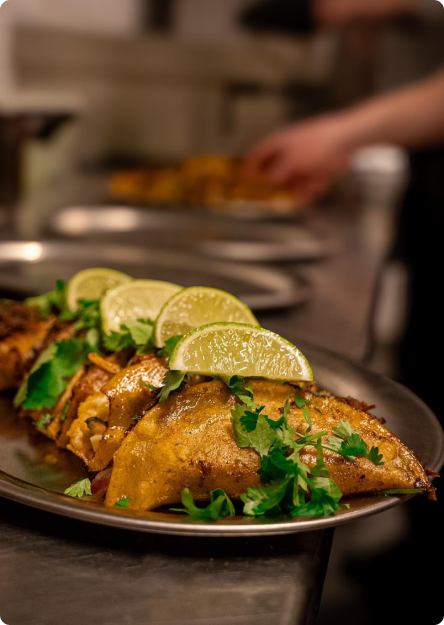

Find os
Det er ikke altid nemt at finde os, men vi lover, det er
det værd! Vi holder til på den legendariske Mejlgade
46B, 8000, Aarhus C.
Følg os også på TikTok og Instagram for at få et kig
bag kulisserne. Her deler vi spændende videoer og
opslag om vores restaurant.
four.amigos03
fouramigos_aarhus
